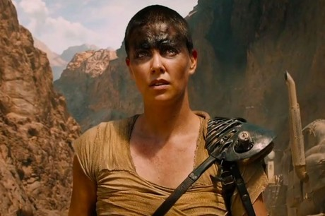
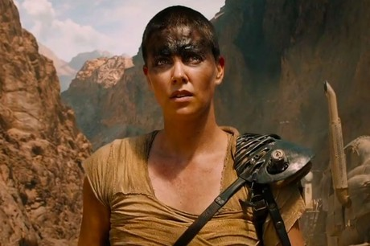
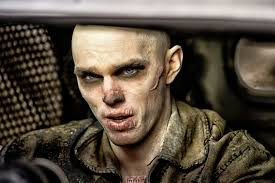
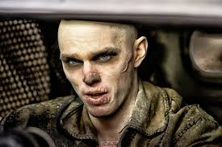

Web page developed by Leonardo Rosa Bittencourt
Nome: Mad Max: Fury Road / Mad Max: Estrada da Fúria
Direção: George Miller
Produção: Doug Mitchell, George Miller, P. J. Voeten
Gênero: Ação / Ficção Científica
Música: Junkie XL
Direção de fotografia: John Seale
Direção de arte: Colin Gibson
Figurino: Jenny Beavan
Edição: Margaret Sixel
Companhias produtoras: Kennedy Miller Mitchell, Village Roadshow Pictures
Distribuição: Warner Bros. Pictures
Idioma original: inglês
Nacionalidade: Austrália / EStados Unidos
Duração: 120 min
Classificação: 16 - Não recomendado para menores de 16 anos
 ---Atriz: Charlize Theron / Personagem: Imperatriz Furiosa
---Atriz: Charlize Theron / Personagem: Imperatriz Furiosa
 ---Ator: Nicholas Hoult / Personagem: Nux
---Ator: Nicholas Hoult / Personagem: Nux

Perseguido pelo seu turbulento passado, Max Rockatansky (Tom Hardy) acredita que a melhor forma de sobreviver é não depender de mais ninguém além de si próprio. Ainda assim, acaba por se juntar a um grupo de rebeldes que atravessa a Wasteland, numa máquina de guerra conduzida por uma Imperatriz de elite, Furiosa (Charlize Theron). Este bando está em fuga de uma Cidadela tiranizada por Immortan Joe (Hugh Keays-Byrne), a quem algo insubstituível foi roubado. Desesperado com a sua perda, o Senhor da Guerra reúne o seu exército e inicia uma impiedosa perseguição aos rebeldes e a mais implacável Guerra na Estrada de sempre.
A Guitarra do inferno: Um dos momentos favoritos dos espectadores em Estrada da Fúria ocorre durante um momento decisivo da perseguição na qual todo o comboio de Immortan Joe aparece para explodir Furiosa, as esposas e Max. Em um dos planos, vemos um guitarrista insano tocando loucamente enquanto o caos acontece ao redor. Poucos sabem, mas o ator Sean Hape estava preso por diversas correntes de segurança, incluindo a guitarra. Somente o instrumento capaz de cuspir fogo pesava “míseros” 60 quilos.
Proezas Mortais: A equipe de dublês de Mad Max: Estrada da Fúria realizou um trabalho histórico ao assumir tantos riscos durante a produção da obra que conta apenas com alguns efeitos visuais digitais para encorpar a ação de alta octanagem. George Miller queria levar a adrenalina do espectador ao máximo ao investir somente em efeitos práticos e nas leis naturais da física para impactar a audiência. Desse modo, 90% das proezas feitas pelos dublês, incluindo os homens pendurados nas varas-pêndulo, são absolutamente reais. E, com os veículos correndo na velocidade média de 60 km/h, qualquer erro seria mortal.
Detonando o Deserto: Embora este Mad Max seja fantástico, sua produção deixou um legado nada bonito no deserto da Namíbia, local onde ocorreram a maior parte das externas filmadas. Embora o governo do local afirme que a produção se preocupou com os cuidados ambientais para preservar o lugar, outras instituições afirmaram que o processo das filmagens das perseguições danificou o deserto de modo irreparável, atropelando lagartos e estragando dunas que nunca haviam sido exploradas anteriormente.